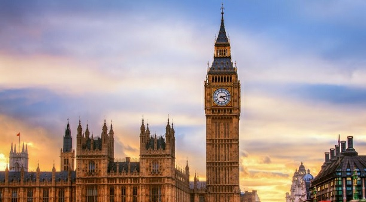

Биг-Бен — популярное туристическое название часовой башни Вестминстерского дворца. Официальное название башни с 2012 года — Башня Елизаветы. Изначально «Биг-Бен» являлось названием самого большого из шести колоколов, однако часто это название расширительно относят и к часам, и к самой часовой башне в целом. 